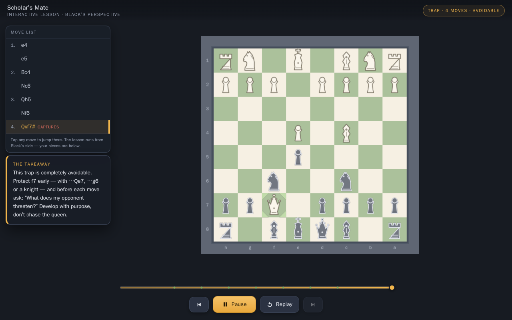

GLM-5.3-Flash
oQ4eJundot oQ4e + MTPomlx 0.7.4.dev1 · M3 Ultra
Tasks run1
Working results1 of 1
Attempts1
Generated tokens32.3K
Energy18 Wh
Results
Every attempt, newest first per task. Faded rows are earlier attempts that were retried.
| Task | Run ended · judged page | Generated | Reasoning | Model calls | Tool errors | Energy | Wall | |
|---|---|---|---|---|---|---|---|---|
 |
Scholar’s Mate — a guided lesson 1 of 1 |
agent exited 137 1 canvas · 0 missing files · 0 page errors |
32.3K | 13.3K | 38 | 0 | 17.5 Wh | 21 min |
* Reasoning estimated from the raw stream where the engine reports one combined count. Wall time depends on hardware and is not ranked.
Pack and engine
- Model
- GLM-5.3-Flash
- Quant
- oQ4e
- Pack
- Jundot/GLM-5.3-Flash-oQ4e-mtp · Jundot oQ4e + MTP
- Revision
- 9e5c75a947f06d807ec55ea625b30613ad98da74
- Size on disk
- 186.4 GB
- Engine
- omlx 0.7.4.dev1
- Engine settings
- speculative=MTP, concurrent_requests=1, ssd_cache=16GB, hot_cache=0, trial_isolation=exclusive GPU; production stopped after verified DigitalOcean cutover, thinking_budget=2048
- Hardware
- M3 Ultra 60c / 256 GB
- Request
- {"reasoning_effort": "high", "thinking_budget": 2048}
- Reasoning effort
- high
- Thinking budget
- 2,048 tokens per response (request)
- Output limit
- 16.4K tokens per response, including reasoning